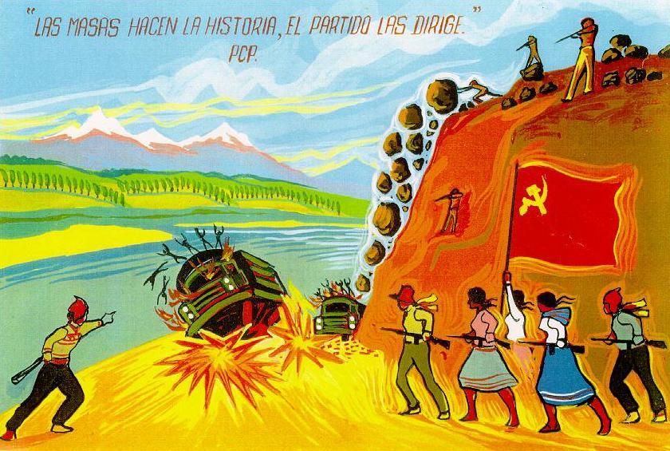

Categories:: Internal armed conflict; indigenous peoples; truth commission; reparations law; state museum; memorial sites.
Actors: Peruvian state; terrorist guerrilla groups (Partido Comunista del Perú-Sendero Luminoso, Movimiento Revolucionario Túpac Amaru) Peruvian armed forces; Alberto Fujimori; civil organisations. According to the report of the Comisión de Verdad y Reconciliación, 69.280 people were killed during this period.
1980 : An attack by Sendero Luminoso guerrillas on the electoral headquarters in Chuschi, Ayacucho region, marked the beginning of the internal armed conflict. The attack took place on the eve of the first presidential elections after twelve years of military
1983 : Eight journalists, a guide and a community member were murdered in the community of Uchuraccay. An investigatory commission was set up. In the following months, the community was attacked by Sendero Luminoso and anti-subversive groups.
1983 : Masacre de Lucanamarca. Sendero Luminoso troops attacked the district of Santiago de Lucanamarca and killed 69 people.
1983 :Police forces tortured and killed 32 people in the community of Socos, Ayacucho.
1984 :The Movimiento Revolucionario Túpac Amaru (MRTA) guerrilla began its armed activities.
1985 : Masacre de Accomarca. Army troops assassinated 69 peasants in the district of Accomarca in Ayacucho.
1989 : Sendero Luminoso forces attacked the police station in Uchiza, Ayacucho, and looted the town.
1992 : Alberto Fujimori's self-coup. On 5 April, with the support of the armed forces, Fujimori dissolved Congress and intervened in other state bodies, taking total control of the government.
1992 :Sendero Luminoso staged a car bombing on Tarata Avenue in Lima's Miraflores district, killing 25 people and wounding another 155.
1992 :Masacre de la Cantuta. Paramilitaries from the Colina group attacked the Universidad Enrique Guzmán y Valle, killing nine students and a professor, who were buried in clandestine graves.
1992 :Abimael Guzmán, leader of Sendero Luminoso, was captured in September.
1996 :Members of the MRTA stormed the Japanese embassy in Lima. They held dozens of hostages for four months.
1998 :Matanza del valle de Tsiriari. An armed group attacked several communities in the Tsiriari Valley in the Junínn region and massacred the local population.
2000 : During a political crisis, Fujimori resigns as president and is impeached by Congress.
Memory initiatives Informe final de la Comisión de Verdad y Reconciliación (2003): a nine-volume document published as a result of this commission's work. It establishes responsibilities for human rights violations by both subversive groups and the state and its armed forces. Ley N°28.592 Crea el Plan Integral de Reparaciones (2005, with further modifications): a law that establishes the conditions and procedures for granting reparations to victims of human rights violations committed between 1980 and 2000. Caso Abimael Guzmán y otros (2006): civilian trial in which Abimael Guzmán was sentenced to life imprisonment for aggravated terrorism and murder. Juicio a Alberto Fujimori (2009): Trial in which the former dictator was sentenced to 25 years in prison for crimes against humanity following his extradition.
Sites of Memory Yuyanapaq: para recordar: a photographic exhibition documenting the period of the internal armed conflict. Inaugurated in 2003, it is currently housed in the headquarters of the Ministry of Culture. Museo de la memoria “Para que no se repita”: a memorial space inaugurated in Ayacucho in 2006, as a result of the work of ANFASEP. El ojo que llora: memorial created by Lika Mutal, inaugurated in 2005 in the Campo de Marte in Lima. It contains the names of victims of violence during the conflict. Lugar de la Memoria, la Tolerancia y la Inclusión Social (LUM): A memorial and educational space, inaugurated in 2015, dedicated to the period of violence between 1980 and 2000. It has a documentation centre.
Organisations Asociación Nacional de Familiares de Secuestrados, Detenidos y Desaparecidos del Perú (ANFASEP): an organisation of relatives of victims of violence, founded in Ayacucho in 1983 by a group of Quechua-speaking women. Coordinadora nacional de derechos humanos (CNDDHH): a body created in 1985 that brings together a group of civil society organisations working to defend and promote human rights. Comisión de Verdad y Reconciliación: an official body created in 2001 during the administration of Valentín Paniagua to investigate the violence that took place between May 1980 and November 2000. The commission's archives are currently housed in the Centro de información para la memoria y los derechos humanos.